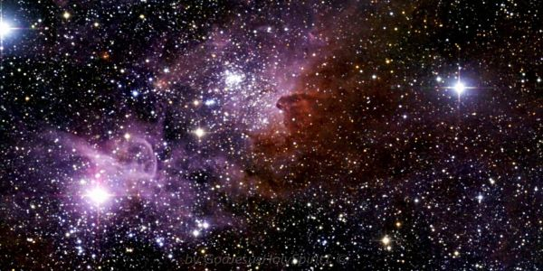

- 

Materija
Što se same materije tiče ne zna se mnogo o njoj … Još postoji puno pitanja i tajni koji znanstvenici ni sami ne razumiju. Danas znamo da atom nije najmanja kockica prirode, da struktura i podjela idu dalje. Prvo su otkriveni proton,neutron i elektron, ali nakon nekog vremena je isto otkriveno da se proton i neutron sastoje od manjih dijelova, a te čestice nazivamo kvarkovima i leptonima koji znanstvenici tvrde da su temeljni dijelovi same materije, ne ne možemo biti sigurni da se ne sastoje od još finije strukture. Malo da skrenemo na vakuum, ipak se dokazuje da nije prazan jer zbog kvantnih efekta, jer ti efekti neprestano stvaraju parove čestica-antičestica da bi se one nakon brzog vremena poništile i nestale. A prostor može sam biti gotovo ravan ili zakrivljen ovisno o količini materije koje sadrži. Astrofizičari tvrde da je nama vidljivo samo samo 4% svemira, tih 4% se sastoji od materije, a ostalih 96% se sastoji od tzv. tamne materije. Fizičari su evidentirali i identificirali 12 građevnih djelića u prirodi koji su temeljni komadići materije. Naš svakodnevni, uobičajeni svijet se sastoji od samo tri takva komadića, kvarka up (gore), kvarka down (dolje) te od elektrona. Taj elementarni skup čestica je sve što je potrebno da se sagrade protoni, elektroni te iz njih atomi i molekule i sva materija koju vidimo. A što se tiče tamne materije ona vrlo slabo poznata materija djeluje gravitacijskom silom na svemir oko sebe i pokreće čitave galaktike. Fizičari razlikuju četiri osnovne sile koje djeluju na čestice: jaku i slabu nuklearnu silu, elektromagnetsku te gravitacijsku silu. Jaka nuklearna sila drži pojedine kvarkove na okupu kako bi oformili protone,neutrone i slične čestice. Elektromagnetska sila veže elektrone za atomsku jezgru jer je elektron električki negativno, a jezgra pozitivno. Slaba sila je uzrok za nuklearni raspad teških atomskih jezgara u manje. Gravitacijska sila djeluje između dva objekta koji posjeduju masu. U principu je vrlo slaba, najslabija od četiriju sila, tako da efektivno djeluje među makroskopskim objektima. Iako nema prevelikog utjecaja među objektima na mikroskopskom nivou, ona je prevladavajuća sila našeg svakodnevnog života. Antimaterija je isto stvarna kao i materija, ona je zrcalna slika čestice materije. Ipak antičestice imaju suprotna svojstva. Tako antiproton nosi negativan naboj, dok je proton pozitivan. Da bi smo sagradili jedan atom anti-vodika, umjesto pozitivnog protona kao jezgre trebao bi stajati negativni anti-proton, a oko njega bi trebao kružiti pozitivni anti-elektron, ili pozitron. Onog trenutka kada u kontakt dođu čestica materije i anti-materije, one se ponište u bljesku energije.